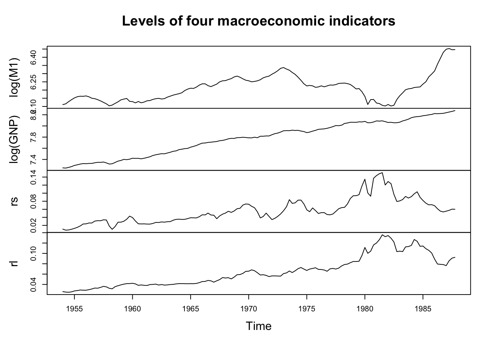

library(tseries)
library(vars)VARs in R
Our data are four seasonally adjusted quarterly macroeconomic time series describing the United States economy. Specifically, we will be relating money supply (M1), output (GNP), short term interest rates, and long term interest rates.
data(USeconomic)
head(USeconomic) log(M1) log(GNP) rs rl
1954 Q1 6.111246 7.249073 0.010800000 0.02613333
1954 Q2 6.115892 7.245084 0.008133333 0.02523333
1954 Q3 6.129268 7.257003 0.008700000 0.02490000
1954 Q4 6.141177 7.271565 0.010366667 0.02566667
1955 Q1 6.151881 7.292746 0.012600000 0.02746667
1955 Q2 6.159307 7.303641 0.015133333 0.02816667plot(USeconomic,main='Levels of four macroeconomic indicators')
The data are clearly not stationary and differencing would be suggested. Further, plots of the data suggest cointegration — in a real analysis, this could invalidate the use of a VAR and instead suggest the use of a VECM to capture the error-correction mechanisms inherent to cointegrated data. We can quickly test for two hypothesized cointegrations.
First, cointegration between money supply and output:
# M1 levels stationary
suppressWarnings(adf.test(log(M1))$p.value<0.05)[1] FALSE# GNP levels stationary
suppressWarnings(adf.test(log(GNP))$p.value<0.05)[1] FALSE# M1 diffs stationary
suppressWarnings(adf.test(diff(log(M1)))$p.value<0.05)[1] TRUE# GNP diffs stationary
suppressWarnings(adf.test(diff(log(GNP)))$p.value<0.05)[1] TRUE# M1/GNP resids stationary
suppressWarnings(adf.test(lm(log(M1)~log(GNP))$residuals)$p.value<0.05)[1] FALSEThese in fact are not cointegrated! But the interest rates probably are:
# Short levels stationary
suppressWarnings(adf.test(rs)$p.value<0.05)[1] TRUE# Long levels stationary
suppressWarnings(adf.test(rl)$p.value<0.05)[1] FALSE# Short diffs stationary
suppressWarnings(adf.test(diff(rs))$p.value<0.05)[1] TRUE# Long diffs stationary
suppressWarnings(adf.test(diff(rl))$p.value<0.05)[1] TRUE# Short/Long resids stationary
suppressWarnings(adf.test(lm(rs~rl)$residuals)$p.value<0.05)[1] TRUEThe evidence here is muddied — perhaps the short-term rates are I(0) while the long-term rates are I(1), but this seems implausible since they track very similar concepts and we have found them to be cointegrated series before. Instead, these two series are likely cointegrated, which will be a caveat for our analysis.
We will move ahead and perform a VAR on the differences of the data. With four times series to track, the number of coefficients will grow quickly: at three lags and including constants, we would have to estimate 52 coefficients! So we will hope that the automated selection procedure identifies a low lag order.
Using vars::VAR, we will fine-tune our model by selecting a number of lags using the “SBC” (also called “BIC”) information criterion, which penalizes extra terms a little more strongly than the original AIC. We will fit constants to each time series but not trends (we have already differenced each series, so a constant in differences is the same as a trend in levels). And since the data are pre-seasonally adjusted, we will not fit quarterly seasonal effects, which would normally be suggested for economic data series.
us.econ.var <- VAR(diff(USeconomic),type='const',ic='SC')
summary(us.econ.var)
VAR Estimation Results:
=========================
Endogenous variables: log.M1., log.GNP., rs, rl
Deterministic variables: const
Sample size: 134
Log Likelihood: 1969.102
Roots of the characteristic polynomial:
0.4443 0.4443 0.08215 0.08215
Call:
VAR(y = diff(USeconomic), type = "const", ic = "SC")
Estimation results for equation log.M1.:
========================================
log.M1. = log.M1..l1 + log.GNP..l1 + rs.l1 + rl.l1 + const
Estimate Std. Error t value Pr(>|t|)
log.M1..l1 0.4377481 0.0579758 7.551 6.97e-12 ***
log.GNP..l1 0.1568151 0.0729949 2.148 0.0336 *
rs.l1 -0.4818413 0.1053116 -4.575 1.10e-05 ***
rl.l1 -1.0158523 0.2168221 -4.685 7.00e-06 ***
const 0.0008599 0.0008230 1.045 0.2980
---
Signif. codes: 0 '***' 0.001 '**' 0.01 '*' 0.05 '.' 0.1 ' ' 1
Residual standard error: 0.00747 on 129 degrees of freedom
Multiple R-Squared: 0.6561, Adjusted R-squared: 0.6455
F-statistic: 61.54 on 4 and 129 DF, p-value: < 2.2e-16
Estimation results for equation log.GNP.:
=========================================
log.GNP. = log.M1..l1 + log.GNP..l1 + rs.l1 + rl.l1 + const
Estimate Std. Error t value Pr(>|t|)
log.M1..l1 0.283757 0.072158 3.932 0.000137 ***
log.GNP..l1 0.170395 0.090851 1.876 0.062979 .
rs.l1 -0.019157 0.131074 -0.146 0.884027
rl.l1 0.191263 0.269862 0.709 0.479764
const 0.005604 0.001024 5.471 2.24e-07 ***
---
Signif. codes: 0 '***' 0.001 '**' 0.01 '*' 0.05 '.' 0.1 ' ' 1
Residual standard error: 0.009298 on 129 degrees of freedom
Multiple R-Squared: 0.1884, Adjusted R-squared: 0.1632
F-statistic: 7.485 on 4 and 129 DF, p-value: 1.872e-05
Estimation results for equation rs:
===================================
rs = log.M1..l1 + log.GNP..l1 + rs.l1 + rl.l1 + const
Estimate Std. Error t value Pr(>|t|)
log.M1..l1 0.1952621 0.0638869 3.056 0.00272 **
log.GNP..l1 0.0887833 0.0804374 1.104 0.27175
rs.l1 0.0025457 0.1160490 0.022 0.98253
rl.l1 0.3978306 0.2389290 1.665 0.09833 .
const -0.0009630 0.0009069 -1.062 0.29026
---
Signif. codes: 0 '***' 0.001 '**' 0.01 '*' 0.05 '.' 0.1 ' ' 1
Residual standard error: 0.008232 on 129 degrees of freedom
Multiple R-Squared: 0.1319, Adjusted R-squared: 0.1049
F-statistic: 4.898 on 4 and 129 DF, p-value: 0.00104
Estimation results for equation rl:
===================================
rl = log.M1..l1 + log.GNP..l1 + rs.l1 + rl.l1 + const
Estimate Std. Error t value Pr(>|t|)
log.M1..l1 -0.0013273 0.0322926 -0.041 0.9673
log.GNP..l1 0.0256948 0.0406583 0.632 0.5285
rs.l1 0.0139946 0.0586587 0.239 0.8118
rl.l1 0.2028224 0.1207701 1.679 0.0955 .
const 0.0002076 0.0004584 0.453 0.6513
---
Signif. codes: 0 '***' 0.001 '**' 0.01 '*' 0.05 '.' 0.1 ' ' 1
Residual standard error: 0.004161 on 129 degrees of freedom
Multiple R-Squared: 0.06043, Adjusted R-squared: 0.0313
F-statistic: 2.074 on 4 and 129 DF, p-value: 0.08788
Covariance matrix of residuals:
log.M1. log.GNP. rs rl
log.M1. 5.581e-05 2.176e-05 -7.857e-06 -4.530e-06
log.GNP. 2.176e-05 8.645e-05 1.795e-05 8.167e-06
rs -7.857e-06 1.795e-05 6.777e-05 2.368e-05
rl -4.530e-06 8.167e-06 2.368e-05 1.731e-05
Correlation matrix of residuals:
log.M1. log.GNP. rs rl
log.M1. 1.0000 0.3132 -0.1278 -0.1457
log.GNP. 0.3132 1.0000 0.2346 0.2111
rs -0.1278 0.2346 1.0000 0.6913
rl -0.1457 0.2111 0.6913 1.0000Interesting results!
Happily, only one lag was selected (we are still fitting 20 coefficients…)
Money supply looks very reactive to lags of itself and every other series.
GNP looks reactive to lags of itself (perhaps) and money supply.
Short term rates and long term rates both possibly react to lags of long-term rates and nothing else.
As a diagnostic, the roots of the AR polynomials for these regressions are all far from the unit circle, suggesting a stable, stationary fit.
R2 measures range from 66% for money supply to 6% for the long-term rates.
The correlation matrix of the residuals from these series shows a small to moderate amount of correlation except between the two interest rates, which have strongly correlated residuals.
From here we have two paths forward: we can pursue Granger causality or we can build a structural VAR (SVAR).1 Let’s tackle the Granger causality first, as it might suggest restrictions to help us reconstruct an SVAR.
Bivariate Granger tests suitable for a simply X-Y model are available through the base R function lmtest::grangertest. However, we will use vars::causality since it handles more than two series and was written explicitly for the vars::VAR model class. The function performs two different tests:
Whether lags of one or more “cause” variables Granger-cause any of the other variables in the system
Whether the data suggest “instantaneous” (same-period) causality between the same sets of variables
causality(us.econ.var,'log.M1.')$Granger
Granger causality H0: log.M1. do not Granger-cause log.GNP. rs rl
data: VAR object us.econ.var
F-Test = 10.215, df1 = 3, df2 = 516, p-value = 1.521e-06
$Instant
H0: No instantaneous causality between: log.M1. and log.GNP. rs rl
data: VAR object us.econ.var
Chi-squared = 17.665, df = 3, p-value = 0.0005156causality(us.econ.var,'log.GNP.')$Granger
Granger causality H0: log.GNP. do not Granger-cause log.M1. rs rl
data: VAR object us.econ.var
F-Test = 2.1821, df1 = 3, df2 = 516, p-value = 0.08922
$Instant
H0: No instantaneous causality between: log.GNP. and log.M1. rs rl
data: VAR object us.econ.var
Chi-squared = 20.817, df = 3, p-value = 0.0001149causality(us.econ.var,'rs')$Granger
Granger causality H0: rs do not Granger-cause log.M1. log.GNP. rl
data: VAR object us.econ.var
F-Test = 7.8226, df1 = 3, df2 = 516, p-value = 4.093e-05
$Instant
H0: No instantaneous causality between: rs and log.M1. log.GNP. rl
data: VAR object us.econ.var
Chi-squared = 44.075, df = 3, p-value = 1.455e-09causality(us.econ.var,'rl')$Granger
Granger causality H0: rl do not Granger-cause log.M1. log.GNP. rs
data: VAR object us.econ.var
F-Test = 9.1279, df1 = 3, df2 = 516, p-value = 6.78e-06
$Instant
H0: No instantaneous causality between: rl and log.M1. log.GNP. rs
data: VAR object us.econ.var
Chi-squared = 43.884, df = 3, p-value = 1.597e-09These results suggest lots of lagged and instantaneous causation across all four variables, with the only possible exception that changs in GNP might not Granger-cause changes in any of the other variables.
To form an SVAR, we will then have to rely upon domain knowledge and possibly-counterfactual hypotheses. Let’s start by forming a recursive or Cholesky-decomposition \(\mathbf{A}\) matrix, one which inverts as clearly as possible.
We will assume:
Money supply contemporaneously reacts to GNP but little else. A change in the bond yields does not affect how much money is currently available, even if it changes how much will be lent going forward.
GNP/output is exogenous. Although it’s in some ways the slowest to evolve, that means it’s largely immune to the immediate actions of the other variables, and so it’s “fastest” to act. When GNP acts, the other variables react. GNP cannot react to the other variables in the same quarter.
Short-term rates do not react contemporaneously to long-term rates. Short-term rates are a policy change (keyed closely to the federal funds overnight banking rate), while long term rates are about far-future expectations and risk premia.
Long-term rates are the most reactive. All meaningful economic actions immediately change our expectations of the future, and the long-term rates are a proxy for future expectations.
These combine to suggest the following \(A\) matrix.2 From the top left, and following our data, the rows and columns represent (1) money supply, (2) output/GNP, (3) short-term rates, (4) long-term rates:
\[\mathbf{A} = \left[ \begin{array}{cccc} 1 & a_{1,2} & 0 & 0 \\ 0 & 1 & 0 & 0 \\ a_{3,1} & a_{3,2} & 1 & 0 \\ a_{4,1} & a_{4,2} & a_{4,3} & 1 \end{array} \right] \quad \begin{array}{c} {\scriptstyle money} \\ {\scriptstyle output} \\ {\scriptstyle short} \\ {\scriptstyle long} \end{array}\]
Fitting an SVAR can be quite tricky, not just conceptually, but as a matter of pure algorithmic convergence. If using the vars::SVAR function, I highly recommend setting the argument estmethod='direct' for a direct likelihood minimization. Even so, you may need to play around with the settings of the unseen call to the optim() function, or increase the maximum number of iterations.
We will estimate \(\mathbf{A}\), and then solve for its inverse, the impact matrix, which describes four hidden “column shocks” (the uncorrelated epsilons, \(\boldsymbol{\varepsilon}_1, \ldots, \boldsymbol{\varepsilon}_4\)):
Amatrix = rbind(c(1,NA,0,0),
c(0,1,0,0),
c(NA,NA,1,0),
c(NA,NA,NA,1))
(us.econ.svar <- SVAR(us.econ.var,estmethod='direct',Amat=Amatrix,max.iter=1000))
SVAR Estimation Results:
========================
Estimated A matrix:
log.M1. log.GNP. rs rl
log.M1. 1.0000 -0.2192 0.0000 0
log.GNP. 0.0000 1.0000 0.0000 0
rs 0.3380 -0.2374 1.0000 0
rl 0.3035 -0.1412 -0.2687 1matrix(round(solve(us.econ.svar$A),4),ncol=4,
dimnames=list(rownames(us.econ.svar$A),c('eps1','eps2','eps3','eps4'))) eps1 eps2 eps3 eps4
log.M1. 1.0000 0.2192 0.0000 0
log.GNP. 0.0000 1.0000 0.0000 0
rs -0.3380 0.1633 1.0000 0
rl -0.3943 0.1186 0.2687 1These results are defensible, though hardly uncontestable. Looking at the lower left of the \(\mathbf{A}\) matrix, we can say things like “When money supply increases by one unit, then long-term rates are expected to decrease by 0.3035 units in the same period.” Looking at the lower right of the impact matrix estimated by \(\mathbf{A}^{-1}\), we read something different: “There’s a type of economic pattern (the ‘eps1’ shock) which affects money supply by 1 SD and simultaneously affects long-term rates by -0.3943 SD”. These two results are not inconsistent: another shocks to the system (the ‘eps2’ shock) also affects both money supply and long-term rates, which is why the full contemporaneous movement is not the same as either shock individually.